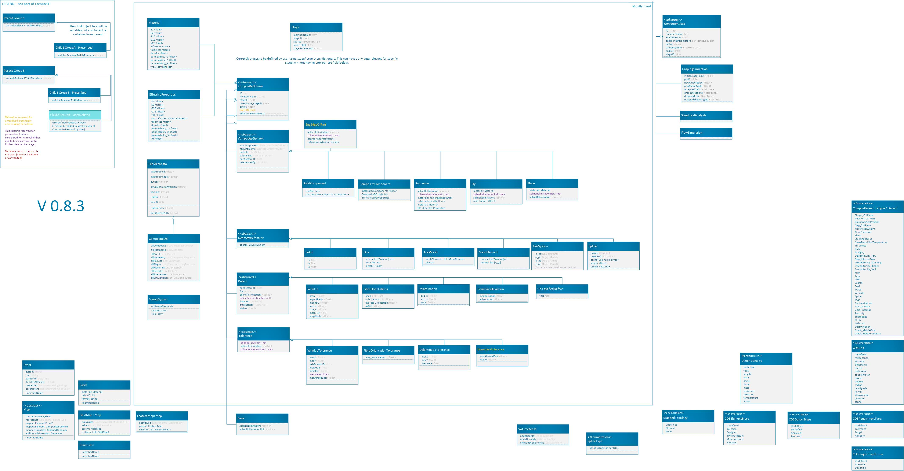

Introduction¶
Composites part data Standard (CompoSt) is a data format for representing as-made composite parts. The data format is appropriate for every stage of a composite part: design, analysis, manufacturing, lifecycle etc…
This repository houses:
A schema for the data format
A read/write library written in python that you can include in your projects
The architecture is still under development. The figure below visualizes current class definition. The rectangle delimits the currently implemented section of the standard. This will expand, and the outer section of the flow chart will be further defined.
This standard is likely going to be under development (hence volatile) at least until v1.0.
{kind=link}
User Requirements¶
The data format is designed to meet the requirements described in User Requirements for CompoSt V1
Main value proposition¶
Represent inspection requirements & tolerances specific to composite parts.
Represent defects & inspected state of a composite part
Machine readable
Open Source licence: you are free to use and develop this format for commercial purposes
Easy to implement: simplifies collaborations, integrations, extensions…